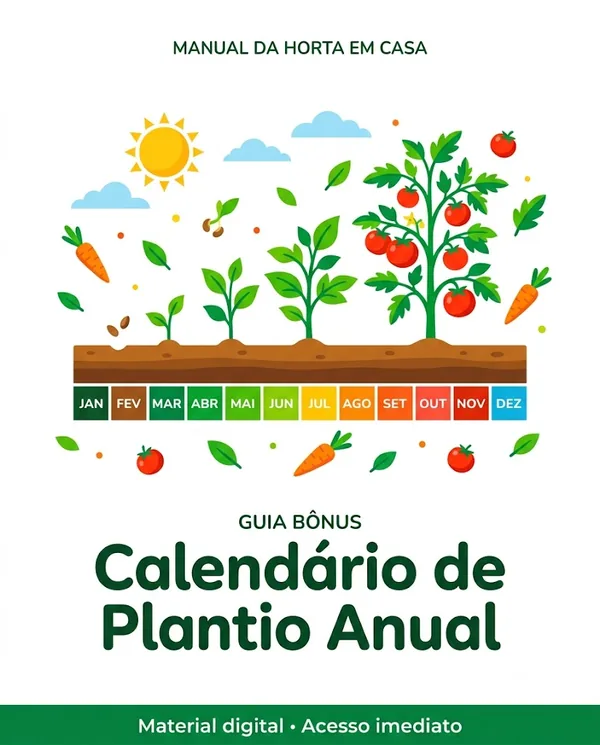
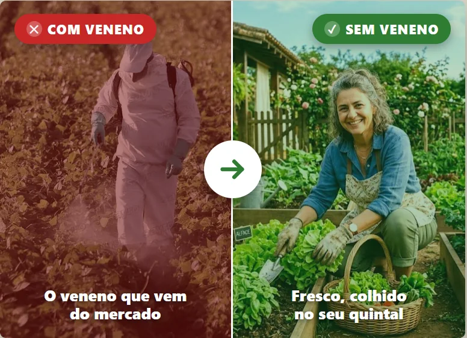
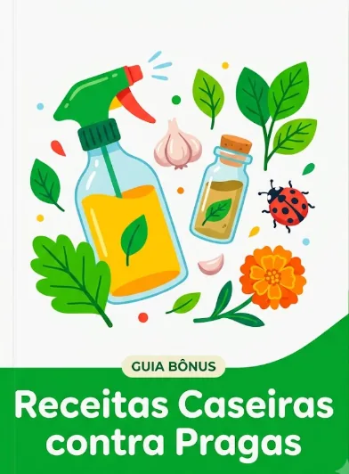
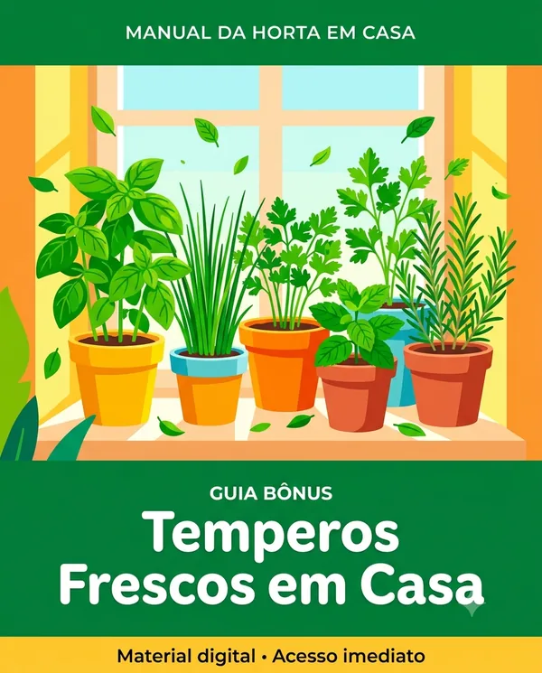

Bônus 1
O que plantar mês a mês, pra nunca perder o tempo certo.
De R$27 GRÁTIS

Aprenda a montar a sua própria horta em casa, do zero — e colha verdura fresca, limpa e sem veneno, mesmo que nunca tenha plantado nada na vida.
QUERO MINHA HORTA EM CASA🌱 A partir de R$10 · acesso imediato
Alimentos cheios de agrotóxicos e químicos. Você ingere um pouco todo dia, sem perceber — venenos que se acumulam no corpo gerando doenças, problemas hormonais e até câncer.
Você colhe o seu próprio alimento, fresco, limpo e sem nenhum agrotóxico, na hora, no quintal de casa — mesmo que nunca tenha plantado nada na vida.
Ideal para quem nunca teve contato com plantio e está começando agora: o passo a passo é do zero, sem precisar de experiência nenhuma.
Perfeito para quem gosta de plantas, de colocar a mão na terra e de ter mais verde e vida dentro de casa.
Indicado para quem quer colocar alimento fresco, saudável e sem veneno na mesa de quem ama.
Ótimo para quem quer uma atividade tranquila, prazerosa e saudável pra fazer no seu próprio ritmo, dentro de casa.

O que plantar mês a mês, pra nunca perder o tempo certo.
De R$27 GRÁTIS

Transforme casca e resto de cozinha em comida pra sua horta, de graça.
De R$27 GRÁTIS

Receitas caseiras pra proteger suas plantas, sem veneno nenhum.
De R$27 GRÁTIS

Cebolinha, salsinha e manjericão sempre à mão.
De R$27 GRÁTIS
⏳ A oferta de hoje termina em:
R$10
pagamento único
✅ O Manual da Horta em Casa completo
✅ Acesso imediato
R$29,90
pagamento único · ou parcelado no cartão
O Manual + os 4 bônus que aceleram a sua horta:
✅ O Manual da Horta em Casa completo
🎁 Bônus 1 — Calendário de Plantio Anual
🎁 Bônus 2 — Guia do Adubo Natural
🎁 Bônus 3 — Controle de Pragas sem Veneno
🎁 Bônus 4 — Temperos Frescos em Casa
✅ Acesso imediato · Garantia de 7 dias
🔒 Pagamento 100% seguro · 📱 Acesso imediato após o pagamento
"Achei que precisava de um quintalzão. Comecei com quatro vasos na varanda e já tô colhendo minha própria salada."
"Nunca tinha plantado nada. Segui o passo a passo e minha primeira alface nasceu. Não troco por nada."

"O que eu mais gosto é saber exatamente de onde veio o que eu como. Isso não tem preço."
PENDÊNCIA: trocar por prints reais conforme as vendas entram.
Você tem 7 dias pra abrir o Manual, colocar em prática e ver com seus próprios olhos. Se achar que não é pra você, é só pedir o reembolso — e devolvo cada centavo, sem pergunta nenhuma.
O risco é todo meu.
Você pode continuar dependendo da prateleira do mercado e do que a indústria decide colocar no seu prato.
Ou pode começar hoje a colher o seu próprio alimento, fresco, no quintal de casa.
QUERO MINHA HORTA EM CASA🌱 A partir de R$10 · acesso imediato após o pagamento
Não. Dá pra começar numa varanda, com vasos.
Consegue. O Manual foi feito pra quem tá começando do zero.
É digital. Cai no seu e-mail na hora do pagamento — abre no celular ou no computador.
Serve. O calendário de plantio te mostra o que dá em cada época.